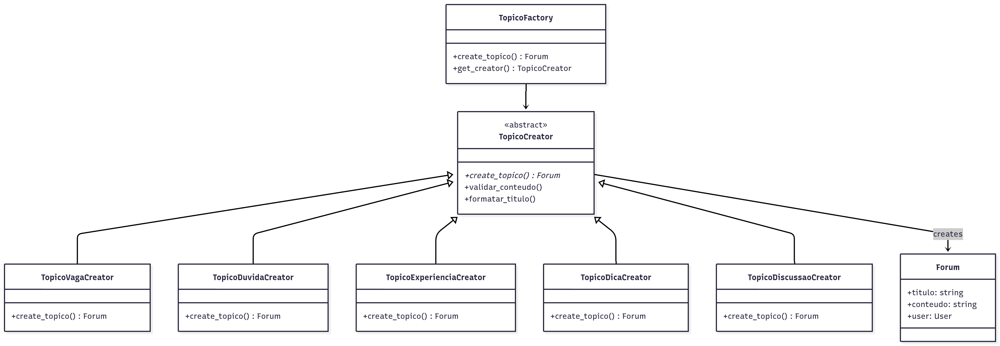

3.1. Factory Method - Fórum de Tópicos
1. Introdução
O padrão Factory Method é um dos padrões de projeto criacionais propostos pela Gang of Four (GoF). Seu principal objetivo é delegar a responsabilidade de criação de objetos às subclasses, promovendo baixo acoplamento e maior flexibilidade na arquitetura do sistema.
2. Metodologia
Neste projeto, o padrão Factory Method foi implementado com o objetivo de gerenciar o processo de criação de diferentes tipos de tópicos no fórum da plataforma Dicas de Estágio. O sistema suporta cinco tipos distintos de tópicos: Vagas, Dúvidas, Experiências, Dicas e Discussões. Todos compartilham os atributos básicos definidos no modelo Forum, porém são instanciados de forma especializada por meio de fábricas específicas (TopicoVagaCreator, TopicoDuvidaCreator, TopicoExperienciaCreator, TopicoDicaCreator e TopicoDiscussaoCreator).
A aplicação do padrão foi conduzida a partir do estudo teórico do conceito e da análise das necessidades de criação de diferentes tipos de conteúdo no fórum. A partir disso, foi elaborada uma estrutura que permite a criação padronizada e extensível de tópicos com características específicas para cada tipo.
Após a definição da arquitetura, a implementação foi realizada em três etapas:
- Definição das classes abstratas e fábricas concretas em
backend/Forum/factories/topico_factory.py; - Integração com o modelo existente
Forumembackend/Forum/models.py; - Criação de testes automatizados para validação das regras e consistência do padrão em
backend/Forum/tests.py.
3. Participantes
Os participantes da implementação deste Padrão de Projeto estão descritos na tabela abaixo:
Tabela 1: Participantes da implementação do Factory Method
| Nome do Integrante | Artefato | Link Comprobatório |
|---|---|---|
| Daniel Ferreira Nunes | Factory Method | PR #3 |
| Paulo Cerqueira | Factory Method | PR #3 |
| Eduardo Ferreira de Aquino | Factory Method | PR #3 |
4. Aplicação do Factory Method
4.1. Modelagem UML
Figura 1: Diagrama de Classes do Factory Method para Tópicos do Fórum

Autores: Paulo Cerqueira, Daniel Ferreira Nunes, Eduardo Ferreira de Aquino
A estrutura implementada demonstra a relação entre as classes, destacando a dependência das subclasses criadoras (TopicoVagaCreator, TopicoDuvidaCreator, TopicoExperienciaCreator, TopicoDicaCreator, TopicoDiscussaoCreator) em relação à superclasse abstrata TopicoCreator, bem como a associação entre os criadores e o produto concreto (Forum).
4.2. Implementação
A estrutura implementada pode ser resumida da seguinte forma:
class TopicoCreator(ABC):
@abstractmethod
def create_topico(self, user, titulo, conteudo, **kwargs):
pass
def validar_conteudo(self, titulo, conteudo):
# Validação comum para todos os tipos
pass
def formatar_titulo(self, titulo, prefixo):
# Formatação padrão de títulos
pass
A classe TopicoCreator define a interface do método-fábrica (create_topico), que será obrigatoriamente sobrescrito nas subclasses concretas. Cada criador é responsável por instanciar um tipo específico de tópico com suas características particulares:
class TopicoVagaCreator(TopicoCreator):
def create_topico(self, user, titulo, conteudo, salario=None, requisitos=None,
empresa=None, tipo_vaga="Estágio", **kwargs):
# Criação específica para tópicos de vaga
return Forum.objects.create(...)
class TopicoDuvidaCreator(TopicoCreator):
def create_topico(self, user, titulo, conteudo, categoria="Geral",
urgencia="Normal", tags=None, **kwargs):
# Criação específica para tópicos de dúvida
return Forum.objects.create(...)
Através dessa estrutura, o código cliente não precisa conhecer diretamente as classes específicas de cada tipo de tópico. Ele apenas interage com a factory apropriada:
topico_factory = TopicoFactory()
vaga = topico_factory.create_topico('vaga', user, titulo, conteudo, ...)
Dessa forma, a instanciação é encapsulada dentro das fábricas concretas, permitindo a expansão do sistema para novos tipos de tópicos sem alterar o código existente.
4.3. Integração com o Sistema
A integração do padrão Factory Method com o sistema existente foi realizada através da criação de uma camada de abstração que permite ao código cliente criar diferentes tipos de tópicos sem conhecer os detalhes de implementação específicos de cada tipo.
O sistema utiliza a classe TopicoFactory como ponto de entrada único, que internamente delega a criação para as fábricas específicas. Isso garante que novas funcionalidades possam ser adicionadas facilmente, respeitando o princípio Aberto/Fechado (OCP) do SOLID.
4.4. Códigos na Íntegra
A seguir, estão apresentados os códigos que implementam as classes relacionadas ao Factory Method para tópicos do fórum.
Forum/factories/topico_factory.py
Clique aqui para ver o código inteiro
from abc import ABC, abstractmethod
from django.utils import timezone
from ..models import Forum
class TopicoCreator(ABC):
@abstractmethod
def create_topico(self, user, titulo, conteudo, **kwargs):
pass
def validar_conteudo(self, titulo, conteudo):
if not titulo or len(titulo.strip()) < 5:
raise ValueError("Título deve ter pelo menos 5 caracteres")
if not conteudo or len(conteudo.strip()) < 10:
raise ValueError("Conteúdo deve ter pelo menos 10 caracteres")
return True
def formatar_titulo(self, titulo, prefixo):
titulo_limpo = titulo.strip()
if not titulo_limpo.startswith(f"[{prefixo}]"):
return f"[{prefixo}] {titulo_limpo}"
return titulo_limpo
class TopicoVagaCreator(TopicoCreator):
def create_topico(self, user, titulo, conteudo, salario=None, requisitos=None,
empresa=None, tipo_vaga="Estágio", **kwargs):
self.validar_conteudo(titulo, conteudo)
titulo_formatado = self.formatar_titulo(titulo, f"VAGA - {tipo_vaga.upper()}")
conteudo_enriquecido = conteudo
if empresa:
conteudo_enriquecido += f"\n\n**Empresa:** {empresa}"
if salario:
conteudo_enriquecido += f"\n**Salário:** {salario}"
if requisitos:
conteudo_enriquecido += f"\n**Requisitos:** {requisitos}"
conteudo_enriquecido += f"\n\n**Tipo de Vaga:** {tipo_vaga}"
conteudo_enriquecido += f"\n**Publicado em:** {timezone.now().strftime('%d/%m/%Y às %H:%M')}"
topico = Forum.objects.create(
user=user,
titulo=titulo_formatado,
conteudo=conteudo_enriquecido,
visualizacoes=0,
is_active=True
)
return topico
class TopicoDuvidaCreator(TopicoCreator):
def create_topico(self, user, titulo, conteudo, categoria="Geral",
urgencia="Normal", tags=None, **kwargs):
self.validar_conteudo(titulo, conteudo)
titulo_formatado = self.formatar_titulo(titulo, f"DÚVIDA - {categoria.upper()}")
conteudo_enriquecido = conteudo
conteudo_enriquecido += f"\n\n**Categoria:** {categoria}"
conteudo_enriquecido += f"\n**Urgência:** {urgencia}"
if tags:
tags_str = ", ".join(tags) if isinstance(tags, list) else tags
conteudo_enriquecido += f"\n**Tags:** {tags_str}"
if urgencia.lower() == "alta":
conteudo_enriquecido += f"\n\n**URGENTE:** Preciso de ajuda rapidamente!"
conteudo_enriquecido += f"\n\n**Pergunta feita em:** {timezone.now().strftime('%d/%m/%Y às %H:%M')}"
conteudo_enriquecido += f"\n**Aguardando respostas da comunidade...**"
topico = Forum.objects.create(
user=user,
titulo=titulo_formatado,
conteudo=conteudo_enriquecido,
visualizacoes=0,
is_active=True
)
return topico
class TopicoFactory:
_creators = {
'vaga': TopicoVagaCreator(),
'duvida': TopicoDuvidaCreator(),
'experiencia': TopicoExperienciaCreator(),
'dica': TopicoDicaCreator(),
'discussao': TopicoDiscussaoCreator(),
}
@classmethod
def get_creator(cls, tipo_topico):
creator = cls._creators.get(tipo_topico.lower())
if not creator:
raise ValueError(f"Tipo de tópico '{tipo_topico}' não suportado. "
f"Tipos disponíveis: {list(cls._creators.keys())}")
return creator
@classmethod
def create_topico(cls, tipo_topico, user, titulo, conteudo, **kwargs):
creator = cls.get_creator(tipo_topico)
return creator.create_topico(user, titulo, conteudo, **kwargs)
@classmethod
def get_tipos_disponiveis(cls):
return {
'vaga': {
'nome': 'Vaga de Estágio/Emprego',
'descricao': 'Para publicar oportunidades de estágio ou emprego',
'campos_extras': ['salario', 'requisitos', 'empresa', 'tipo_vaga'],
'exemplo': 'Vaga para desenvolvedor Python júnior'
},
'duvida': {
'nome': 'Dúvida sobre Estágios',
'descricao': 'Para fazer perguntas sobre estágios e carreira',
'campos_extras': ['categoria', 'urgencia', 'tags'],
'exemplo': 'Como me preparar para entrevista técnica?'
},
'experiencia': {
'nome': 'Compartilhar Experiência',
'descricao': 'Para compartilhar experiências de estágio',
'campos_extras': ['empresa', 'periodo', 'area', 'nota_experiencia'],
'exemplo': 'Minha experiência como estagiário na empresa X'
},
'dica': {
'nome': 'Dica de Carreira',
'descricao': 'Para compartilhar dicas úteis sobre carreira',
'campos_extras': ['categoria_dica', 'nivel', 'aplicabilidade'],
'exemplo': 'Como criar um LinkedIn profissional'
},
'discussao': {
'nome': 'Discussão Geral',
'descricao': 'Para iniciar discussões sobre temas diversos',
'campos_extras': ['tema', 'tipo_discussao'],
'exemplo': 'O que vocês acham do home office para estagiários?'
}
}
5. Testes e Validação
5.1. Passo-a-passo de execução dos testes
Navegar para o diretório do projeto
cd backend
Ativar o ambiente virtual (se necessário)
source ../.venv/bin/activate
Executar os testes do Factory Method
python manage.py test Forum.tests.TopicoFactoryTestCase -v 2
Executar comando de demonstração
python manage.py test_topico_factory --criar-exemplos
Ao executar os testes, o Django cria um banco de dados temporário e verifica se as fábricas e validações funcionam conforme o esperado, garantindo que o padrão Factory Method foi corretamente aplicado para os tópicos do fórum.
5.2. Resultados Esperados
Os testes validam os seguintes aspectos:
- Criação correta de diferentes tipos de tópicos: Verifica se cada factory cria o tipo correto de tópico com os atributos específicos
- Validação de entrada: Testa se as validações de título e conteúdo funcionam adequadamente
- Formatação de títulos: Confirma se os prefixos são aplicados corretamente
- Integridade dos dados: Garante que os tópicos são salvos no banco com todas as informações necessárias
- Extensibilidade: Verifica se novos tipos de tópicos podem ser adicionados sem quebrar funcionalidades existentes
6. Conclusão
A implementação do padrão Factory Method para o sistema de tópicos do fórum garantiu uma estrutura organizacional robusta e extensível para a plataforma Dicas de Estágio. O padrão possibilitou a criação padronizada de diferentes tipos de conteúdo, cada um com suas características específicas, mantendo a consistência e facilitando futuras expansões.
A aplicação do padrão foi acompanhada de implementação completa em Python/Django, integração com API REST, testes automatizados abrangentes e documentação detalhada, assegurando sua correta funcionalidade e aderência aos princípios da engenharia de software orientada a objetos.
O sistema resultante oferece uma base sólida para o crescimento do fórum, permitindo a adição de novos tipos de tópicos de forma organizada e mantendo a qualidade e consistência do conteúdo publicado.